AstroPIE-53: Towards Understanding Failure Modes of Human Pose Estimation in Space
Computer Vision Group, RWTH Aachen University, Germany
SPAICE 2026: AI in and for Space
ESA ESTEC, Noordwijk, The Netherlands · 21–23 October 2026
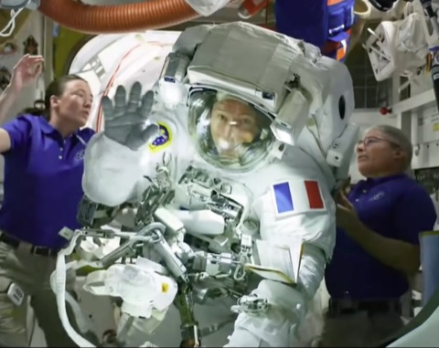
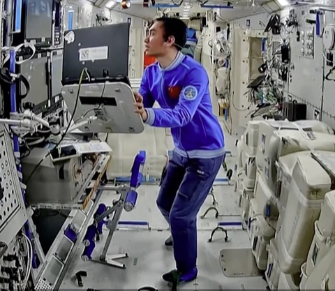
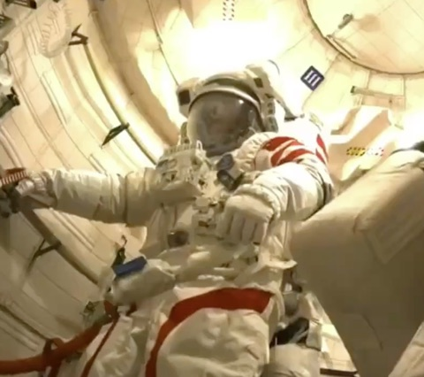
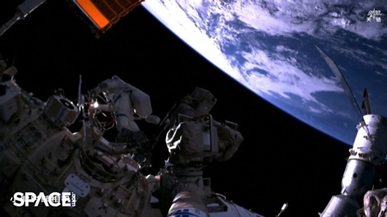
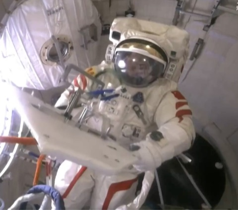
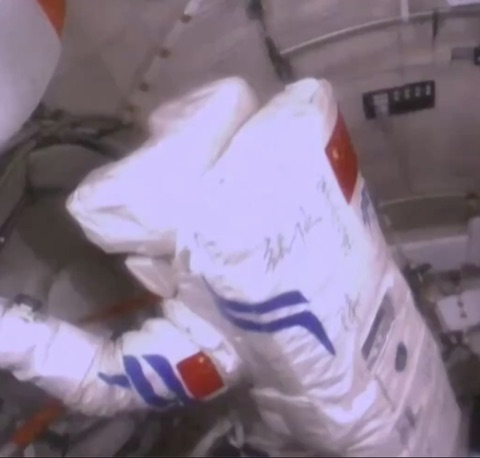
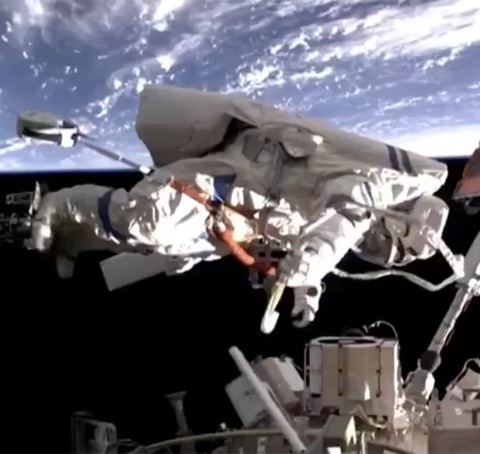
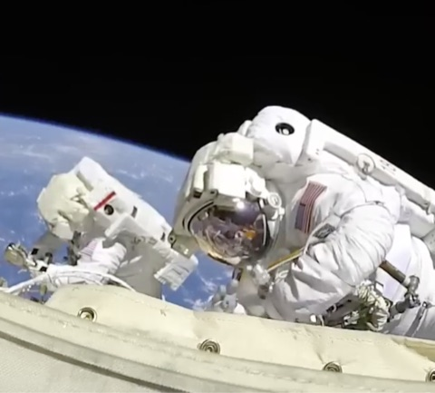
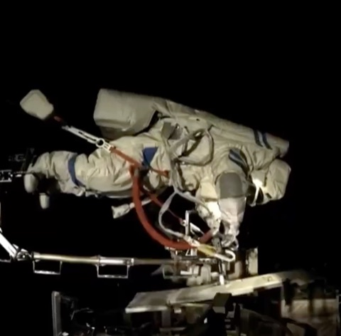
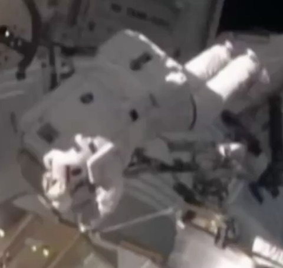
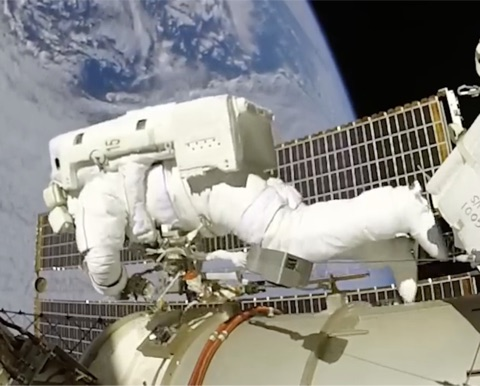
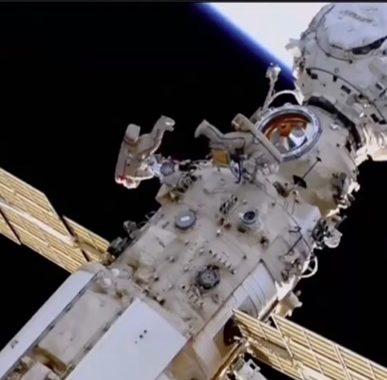
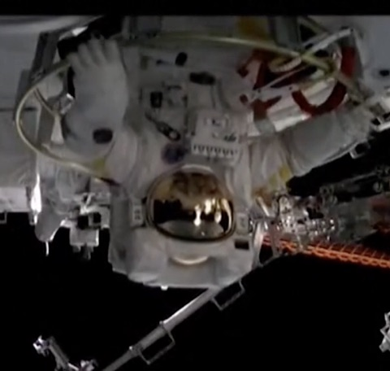
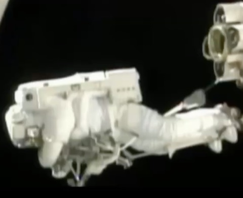
Abstract
Reliable monitoring of astronauts is essential for safety, situational awareness, and autonomous assistance in space missions. While modern computer vision enables accurate human detection and pose estimation on Earth, its robustness in space environments remains largely unquantified due to limited data availability. We present AstroPIE-53, a pilot dataset of 53 annotated astronaut videos collected from publicly available mission footage. To respect copyright restrictions, we release video identifiers, reconstruction scripts, and dense annotations rather than raw videos. The dataset includes bounding boxes, challenge classes, and human-annotated pose failure tags. We benchmark state-of-the-art person detection and pose estimation models under realistic zero-shot deployment conditions and perform the first systematic failure analysis for astronaut monitoring. Our results reveal substantial performance degradation caused by occlusions, unusual body orientations, low contrast, and microgravity motion patterns.
Dataset
We collected 53 videos from publicly available astronaut recordings published by space agencies, covering intra- and extra-vehicular activities such as maintenance tasks, tours and mission operations. A semi-automated pipeline searches for candidate videos, synchronises them with a metadata repository, and prepares them for annotation. We manually annotated bounding boxes on 20.5k frames, challenge classes per video, and pose failure tags per astronaut track.
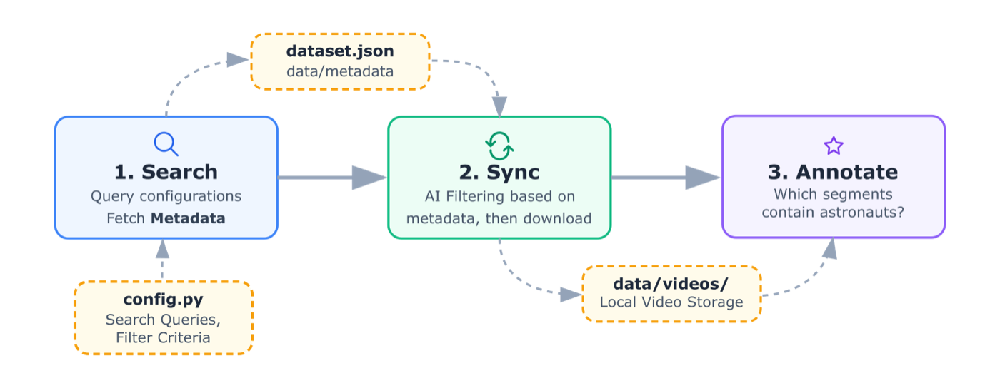
Three-stage data pipeline: metadata-driven video search, filtering and synchronisation of relevant recordings, and frame extraction and annotation.
| Spacesuit | Orientation | Env. | Contrast | Distance | Occlusion | |||||||||
|---|---|---|---|---|---|---|---|---|---|---|---|---|---|---|
| Suit | No-suit | Front | Back | Side | Multi | Ind. | Out. | High | Low | Close | Far | Occ. | Non-occ. | |
| Videos | 43 | 10 | 7 | 3 | 25 | 18 | 15 | 38 | 20 | 18 | 46 | 7 | 9 | 44 |
| Frames [%] | 86.0 | 14.0 | 8.4 | 7.0 | 34.6 | 50.0 | 21.0 | 79.0 | 39.3 | 60.7 | 68.8 | 31.2 | 17.1 | 82.9 |
Statistics of AstroPIE-53 across the 14 challenge label subsets.
Astronaut detection
We evaluate Grounding DINO, RF-DETR and YOLO26 without retraining. Detection is substantially better without spacesuits and from frontal views. Back views, low contrast and large camera distances cause the strongest drops. Grounding DINO clearly outperforms the other two detectors, which detect almost nothing outdoors, at low contrast or at far distances.
| AP@50 [%] | DINO (astronaut) | DINO (person) | RF-DETR | YOLO26 |
|---|---|---|---|---|
| Suit | 46.03 | 46.88 | 16.78 | 14.85 |
| No-suit | 86.90 | 86.87 | 85.76 | 84.40 |
| Front | 94.91 | 94.57 | 86.15 | 86.22 |
| Back | 13.62 | 24.64 | 6.52 | 2.18 |
| Side | 76.24 | 73.93 | 30.17 | 23.53 |
| Multi | 31.91 | 33.45 | 14.81 | 16.30 |
| Indoor | 81.00 | 85.92 | 80.80 | 80.99 |
| Outdoor | 43.66 | 43.37 | 11.70 | 9.34 |
| High contrast | 73.96 | 68.94 | 22.66 | 18.40 |
| Low contrast | 24.05 | 26.82 | 4.61 | 3.48 |
| Close | 66.67 | 65.96 | 37.46 | 34.45 |
| Far | 18.42 | 22.21 | 0.23 | 0.83 |
| Occluded | 52.15 | 52.76 | 27.87 | 25.70 |
| Non-occluded | 46.66 | 47.99 | 14.00 | 13.72 |
AP@50 per challenge category (τconf = 0.3, τIoU = 0.5). Categories overlap and are imbalanced, so the numbers show associations, not isolated effects.
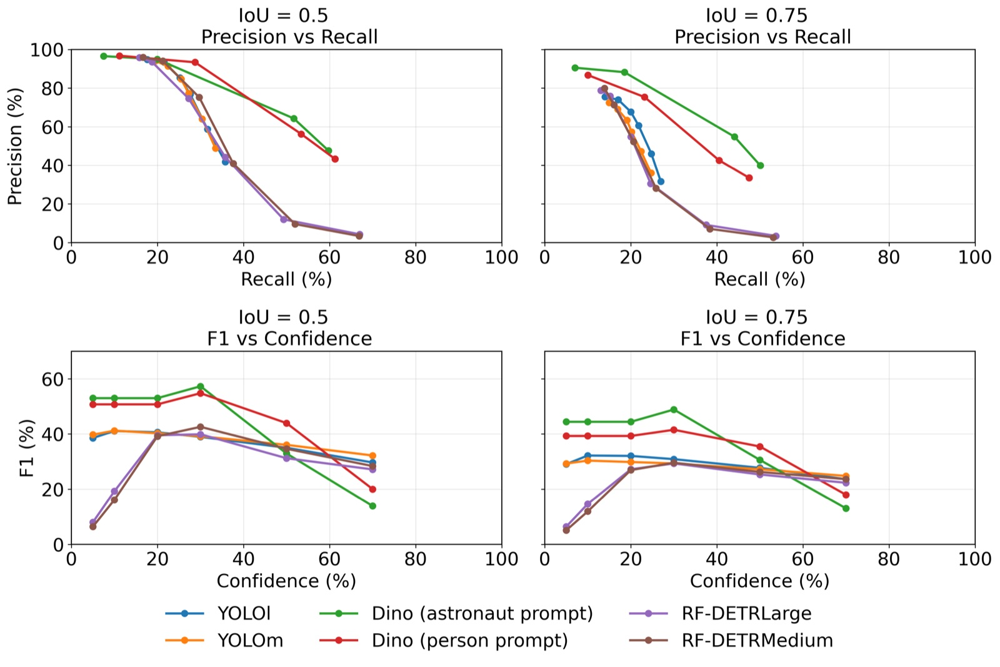
Precision–recall curves (top) and F1 score versus confidence threshold (bottom) at IoU 0.5 and 0.75. The best trade-off lies around τconf = 0.3 and τIoU = 0.5.
Pose failure analysis
Real mission footage has no ground-truth poses, so we label the predictions of MeTRAbs, NLF and ViTPose with failure categories per astronaut track, using our ground-truth boxes to separate pose errors from detection errors. Fully misaligned poses are the dominant failure, likely caused by unusual body orientations in microgravity. No pose estimator is best across all failure modes.
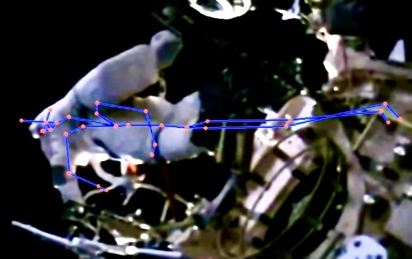
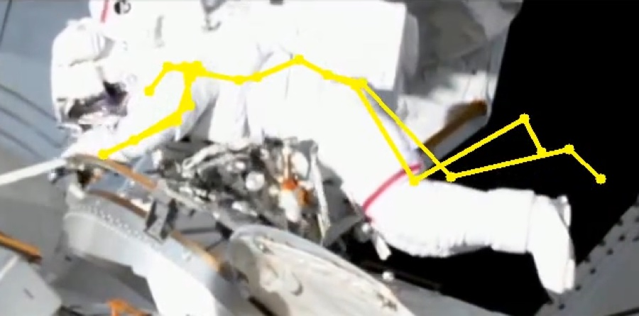
| Failure type [%] | MeTRAbs | NLF | ViTPose |
|---|---|---|---|
| Misaligned head | 3.9 | – | – |
| Misaligned torso | 0.9 | 0.1 | – |
| Misaligned arms | 1.3 | 4.6 | 0.1 |
| Misaligned legs | 8.5 | 7.9 | 1.5 |
| Scale | – | 3.4 | – |
| Global orientation | 1.8 | 3.8 | 0.3 |
| All misaligned | 43.3 | 30.9 | 57.2 |
| Jitter | 4.9 | 1.9 | 9.8 |
| Shadowing | 1.0 | – | 1.5 |
| Correct estimations | 55.4 | 69.8 | 48.3 |
Share of the 19,912 annotated bounding-box keyframes with each failure type. A keyframe can have several failure types, so the columns do not add up to 100%.
Annotation application
All labels were created with our desktop annotation application for bounding-box tracks, keypoints and failure tags. It runs offline on Linux, macOS and Windows.
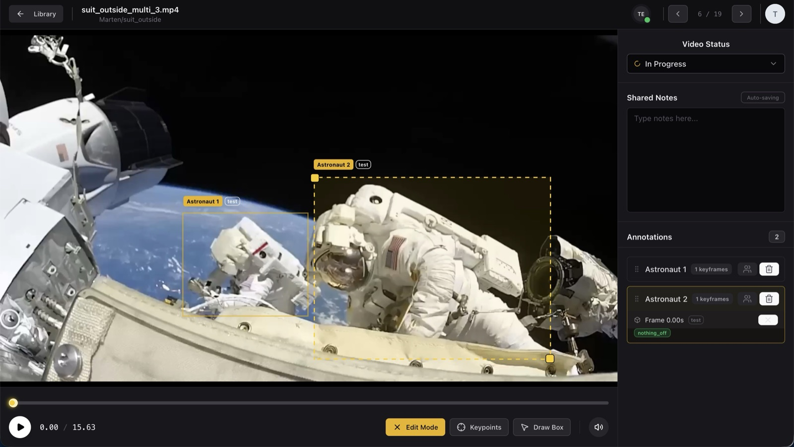
BibTeX
@inproceedings{kaes2026astropie53,
title = {{AstroPIE-53}: Towards Understanding Failure Modes
of Human Pose Estimation in Space},
author = {K{\"a}s, Stephanie and Flaig, Marten and Woyke, Lukas and
{\"O}mero{\u{g}}lu, Osmanalp and Krueckel, Felix and
{\c{C}}ulha, Onur Alp and Leibe, Bastian},
booktitle = {SPAICE 2026: AI in and for Space},
address = {Noordwijk, The Netherlands},
publisher = {European Space Agency},
year = {2026},
eprint = {2611.20207},
archivePrefix = {arXiv},
primaryClass = {cs.CV}
}